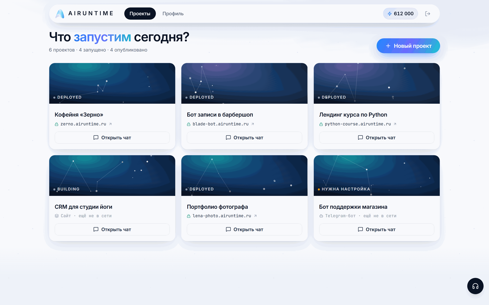
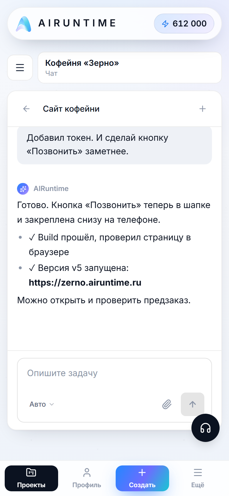
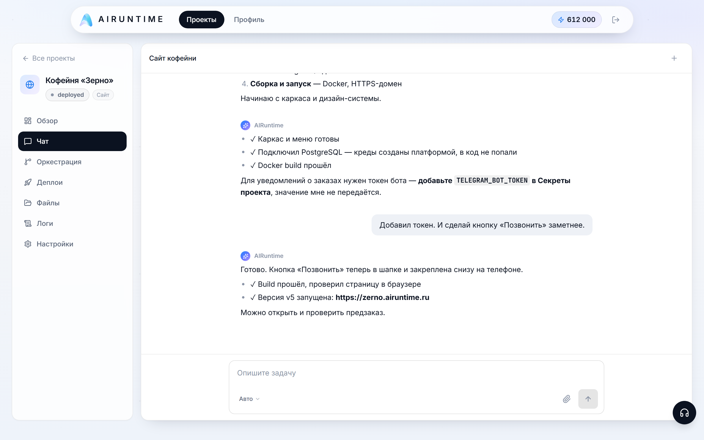
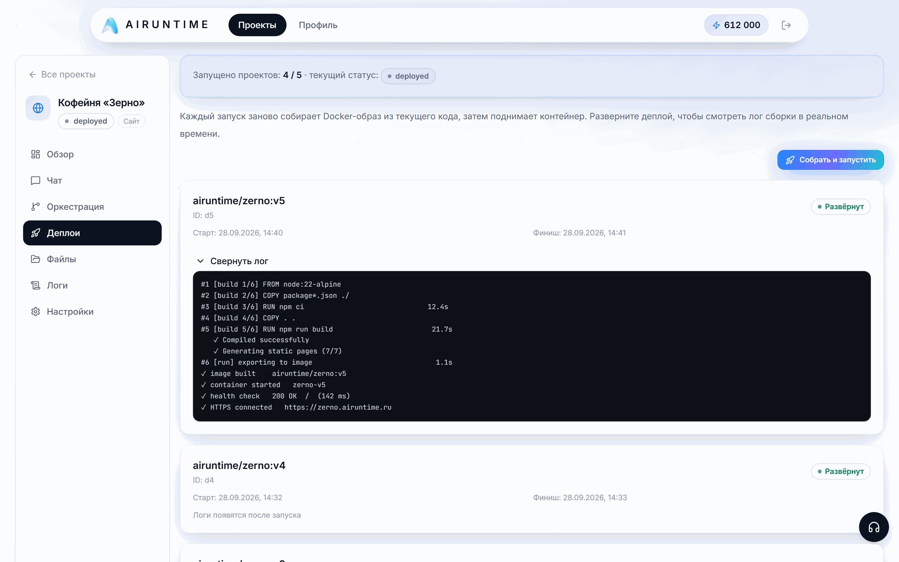
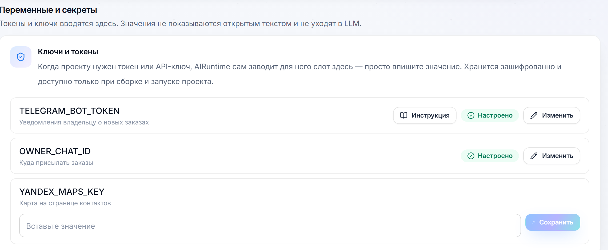
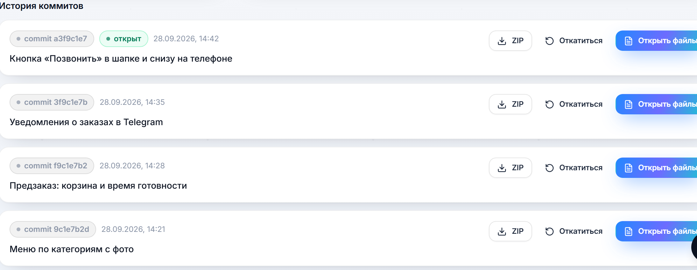

Сайт или Telegram-бот из одного чата: AI-агент пишет код, собирает его в Docker, проверяет и сам выводит проект в прод по HTTPS.


Лендинг, сервис записи или бот нужен «на этой неделе». Но каждый привычный путь где-то обрывается.
Что на самом деле нужно: описать результат своими словами — и получить ссылку, по которой продукт уже работает, а потом дорабатывать его тем же разговором.
Пользователь пишет задачу обычным языком. Дальше платформа ведёт проект сама — и показывает каждый шаг.

Результат — не «вот вам файлы», а проверенная Docker-сборка, которая уже отвечает по HTTPS.

*.airuntime.ru с HTTPS или свой домен после проверки DNS.Всё, что обычно требует DevOps, агент запрашивает у платформы по ходу работы.
Нужна база — агент просит её у платформы: сервис, креды и приватная сеть создаются сами и подставляются в окружение.
Нужен токен — агент заводит пустой слот, значение вводит только пользователь. Хранится зашифрованно и не уходит в LLM.

Изменения коммитятся в git: любую версию можно открыть, скачать архивом или откатить.

Задача раскладывается на граф шагов; каждый шаг выполняется, проверяется доказательствами и при неудаче перепланируется.
↺ не прошло проверку — перепланирование
Каждый проект — свой контейнер; параллельные изменения — в отдельных рабочих копиях git.
Шаг считается сделанным, только если прошли проверки: сборка, статический анализ, превью.
Расход видно по ходу работы; закончился бюджет — проект ждёт пополнения, а не падает.
OpenAI, Anthropic, Gemini, OpenRouter — через ключ платформы или свой ключ.
Стек под задачу выбирает агент. Достаточно описать результат — или взять формулировку ниже.
Сделай сайт автосервиса с записью
Нужен лендинг для запуска курса
Сайт записи к мастеру с уведомлениями
Бот принимает заявки и шлёт напоминания
Лендинг кофейни и бот для брони столиков
Учёт заказов для студии с отчётом за неделю
Задача: сайт, запись или бот для своего бизнеса без подрядчика.
Что получают: рабочую ссылку в тот же день и правки словами, без ТЗ и счетов за каждую итерацию.
Задача: лендинги под кампании, промо, сбор заявок — быстро и много.
Что получают: страницу под гипотезу без очереди к разработке и свой домен для запуска.
Задача: MVP, прототип, внутренний инструмент — проверить до того, как тратить спринт.
Что получают: работающий сервис с базой и логами, код в git — можно забрать дальше в разработку.
Сравниваем качественно, по тому, что важно при запуске небольшого продукта.
| Разработчик или студия | Конструктор сайтов | AI-генератор кода | AIRuntime | |
|---|---|---|---|---|
| Старт | ТЗ и ожидание | выбор шаблона | промпт | сообщение в чате |
| Нужны навыки | нет, но нужен бюджет | настройка блоков | разработка и DevOps | нет |
| Своя логика и бэкенд | да | ограниченно | да, если соберёте сами | да: код, база, бот |
| Хостинг, домен, HTTPS | отдельно | включено | на вас | включено, свой домен тоже |
| Ошибка сборки | разработчик | — | на вас | агент чинит сам |
| Правки | новая итерация | вручную в редакторе | заново и вручную | словами в том же чате |
| Код | у подрядчика | закрыт | у вас | в git, версии и архивы |
Тариф включает ежемесячный бюджет на генерацию и лимит проектов. Кончился бюджет — пополнение баланса, без смены тарифа.
Подключил ключ провайдера — токены без списаний и доступ ко всем моделям. Ключ хранится зашифрованно, показываются только последние 4 символа.
На генерацию через ключ платформы — наценка 10%, настраивается без релиза. Бюджет тарифа ниже его цены — у подписки остаётся маржа.
На любом тарифе: проверка DNS и HTTPS. Остальное — поддомен *.airuntime.ru.
Токены и ключи вводятся в настройках проекта, хранятся зашифрованно и подставляются только при сборке и запуске.
Каждый проект — отдельный контейнер со своей приватной сетью для баз и сервисов.
Бэкенд только проверяет изменения статически; запускается код лишь в контейнере проекта.
Каждое изменение — коммит: видно, что менялось, можно скачать архив или откатиться.
Токены, время генерации и стоимость — по каждому проекту в кабинете.
Проект можно остановить, перезапустить или пересобрать из любой версии.
Опишите задачу в чате — AIRuntime соберёт и запустит её за вас. Первый проект — бесплатно.